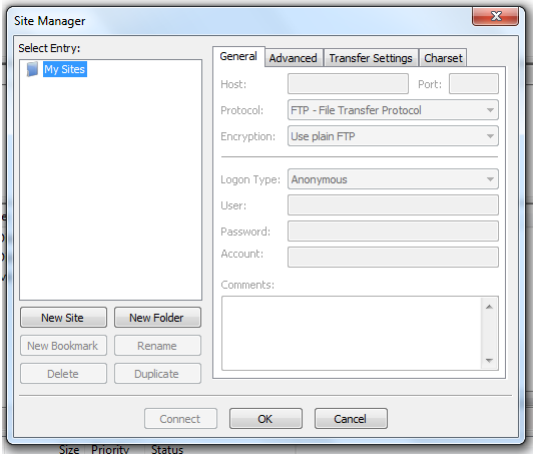
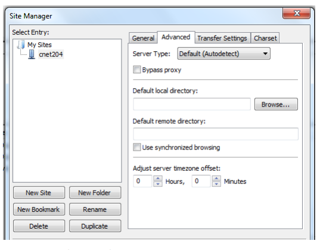

Directory Structure & FileZilla Connection Instructions
Directory Structure
On your H drive, create the following directory structure, replacing coursecode with that respective of your course (for example cnet204 or comp213):
coursecode |---- images
All your html & css documents will go in the course folder. All your images will go in the images folder.
You're going to create the same directory structure on the server as well with coursecode on H, and in your default directory on the server matching exactly in lay out. This will allow you to use a relative path for linking files together and embedding images, and will ensure things work in both places.
Connecting With FileZilla
- Install the Filezilla client (skip this step if it's already installed on the PC)
- Open the site manager (the left most icon in the menu bar). You should see something like this: 
- Click "New Site"
- Name your connection with your respective course code (for example, cnet204) and enter the following information
- Host: studentwebftp.centennialcollege.ca
- Encryption: Require explicit FTP over TLS
- Logon type: Normal
- User: yourstudentnumber
- Password: the same one you use to log into the PC in the lab
- Click on the advanced tab. You screen should look something like this: 
- Enter the following information
- Default local directory: The directory you created on your H drive
- Default remote directory: /firstpartofyourcentennialemail
- Click connect.